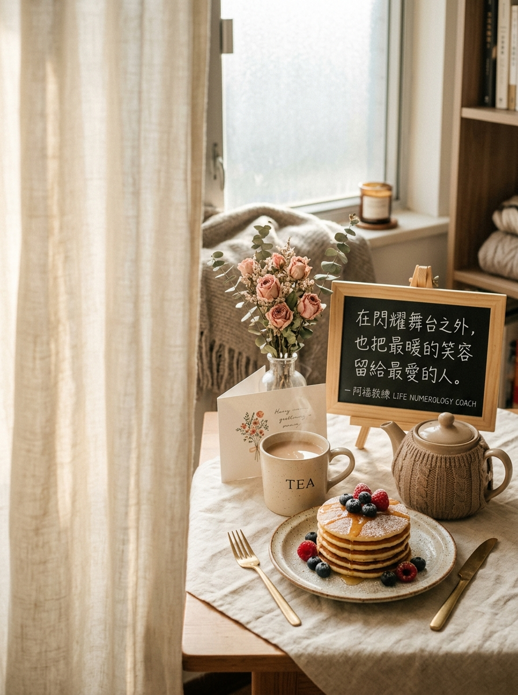

NOVEMBER 21 · DAZZLING CHARM & LOVING SANCTUARY
11/21 壽星
生日快樂
「在閃耀舞台之外，也把最溫柔的笑容留給最愛的人。」
生日數 21（內1 外2 合3：魅力・表達・社交才華）
2026 流年 6（愛・守護・家庭・療癒溫度）
生日數能量：靈感・表達・社交・魅力
流年 6 主題：愛・守護・家庭・溫度
A YEAR OF HEARTFELT DEVOTION & WARM BELONGING
在百花齊放的社交掌聲外，用真摯陪伴築起最溫暖的心靈避風港
迎向 2026 流年 6 的愛與守護週期，宇宙想為天生自帶聚光燈的 21/3 號人注入最深情的生活溫度：身為內具獨立主見（1）、外顯溫和貼心（2）、合為社交魅力寵兒（3）的壽星，你在人群中總是妙語如珠、閃閃發光；然而今年最能填滿你靈魂的，不是外界的熱鬧掌聲，而是「與重要之人共度的親密時光」。把你最迷人的幽默與溫柔留給家人、伴侶與摯友，當你的才華有了深厚情感的滋養，你的人生將既耀眼又無比踏實幸福。
年度提問｜「今天我能為最在乎的人做一件怎樣微小卻貼心的溫暖小事？」
YOUR ENERGY DJ · 3 號人的流年 6 暖心點播站
當璀璨迷人的 21/3 才華，走進深情守護的流年 6
身為人見人愛、充滿靈感與魅力的 3 號壽星，走進「流年 6」的溫馨節奏，正是把愛落實到日常的甜美時刻！今天 DJ 特別為你調配流年 6 溫暖守護歌單——讓心安定下來，在付出愛與被愛的日常中收穫滿溢的幸福！
LIFE NUMBER 6 · CLASSROOM PLAYLIST
6 號人課堂激勵與歡唱歌單（給 3 號人的流年 6 能量歌單）
這份歌單來自阿福教練生命靈數課堂中，專為流年 6 主題（愛・守護・家庭・溫度）所調配的經典曲目。點擊任一曲目即可開啟 YouTube 搜尋聆聽，陪伴你在新的一歲調頻對齊、綻放光芒！
- 01奉獻蘇芮｜主題開場・肯定付出與承擔，引導思考我想為所愛帶來怎樣的價值（YouTube 搜尋）
- 02姊妹張惠妹｜關係暖身・以支持與珍惜的溫暖氛圍，建立心靈無條件的信任（YouTube 搜尋）
- 03朋友周華健｜團隊合唱・強化可靠陪伴與深厚信任，歡唱中凝聚長久深情（YouTube 搜尋）
- 04溫柔五月天｜同理練習・學習傾聽與尊重，讓愛的付出不造成對方的壓力（YouTube 搜尋）
- 05家後江蕙｜責任照顧・以長期守護與深情相伴，連結 6 號人的核心底蘊（YouTube 搜尋）
- 06魚仔盧廣仲｜在乎的人・喚起對身邊重要之人的思念，化關心為具體行動（YouTube 搜尋）
- 07祝福張學友｜溫暖感謝・將服務與守護精神延伸為最真摯的祝福與支持（YouTube 搜尋）
- 08明天會更好群星｜共同收束・把個人關懷擴大成彼此照顧的溫暖承諾，攜手前行（YouTube 搜尋）
歌單依《生命靈數6號人_激勵九首與歡唱點播歌單》整理。點播連結均為 YouTube 官方影音搜尋結果；播放時請依授課場地與著作權規範使用。
願你的才華散發溫暖療癒的光芒，在深愛與被愛的日常裡，收穫穩穩的幸福與滿足。
👉 11/21 壽星快來留言【🥞】！為新的一歲許下最棒的心願！
#11月21日生日快樂 #生命靈數 #生日數21 #生日數3 #流年6 #深情守護 #最暖笑容 #阿福教練